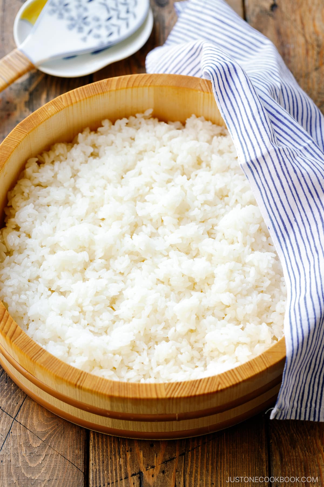

Sushi Rice

Description
Sushi rice is made by cooking Japanese short-grain rice with kombu (kelp),
which is then seasoned with a mixture of rice vinegar, sugar, and salt.
In Japanese, sushi rice is also known as sushi-meshi (鮨飯), su-meshi (酢飯),
or shari (シャリ). We only use this vinegar-flavored rice when making all kinds
of sushi.
It's worth noting that outside of Japan, Japanese short-grain rice is often called
“sushi rice” for marketing purposes. In reality, Japanese rice is typically used in
everyday meals and less often in sushi recipes.
Ingredients
- 2 1/4 cups short grain rice
- 2 1/4 cups water
- 1 piece kombu
- 1/3 cup seasoned rice vinegar
Steps
- If using a wooden sushi oke (also called hangiri), moisten it by running water over it, drain well, and dry it with a clean towel. You can also use a baking sheet lined with parchment paper.
- When the rice is cooked, discard the used kombu (or repurpose it to make simmered kombu).
- Transfer the cooked rice into the sushi oke. Spread out the rice evenly so it will cool faster.
- While it's hot, pour the sushi vinegar over the rice. Tip: You can still use this same amount of sushi vinegar whether you are making a bit more or less sushi rice. Take note that we add roughly 8–10% of the cooked rice weight in sushi vinegar.
- With a rice paddle, gently “slice” the rice at a 45-degree angle to incorporate the sushi vinegar mixture and separate the chunks of rice. Do not stir or mix the rice because the grains may break and the rice will become mushy. While using this slicing motion, vigorously fan the rice with a paddle fan or another type of fan. This cools the rice and takes away the excess moisture. Fanning makes the rice shine and keeps it from becoming mushy.
- Then, gently flip the rice in between slices.
- Repeat this process until the rice is cooled to the temperature of human skin. Your Sushi Rice is now ready to use in your favorite sushi recipes.